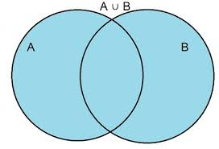
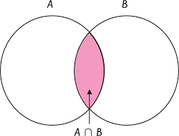
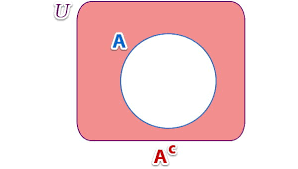
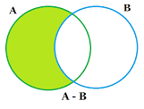

Asi como es posible llevar acabo operaciones entre números, también
se pueden realizar operaciones con conjuntos y éstas se aplican en prácticamente todos los temas de las ciencias de la
computación,y se pueden ilustrar por medio de un diagrama de Venn con el fin de observar más claramente la
relación entre los conjuntos.
Definición 3.-
UNIÓN (A ∪ B))
La unión del conjunto A y el conjunto B es el conjunto que contiene
a todos los elementos del conjunto A y del conjunto B:
A ∪ B = {x|x ∈ A ó x ∈ B}
El siguiente diagrama ilustra la definición:

Ejemplo 2.2.1:
Sean los conjuntos:
A = {1,2,3,6,7,8}
B = {x | x ∈ Z+; x ≤12; x es par}
Aplicando la definición de unión de conjuntos se tiene que:
A ∪ B= {1,2,3,4,6,7,8,10,11}
Definición 4.-
INTERSECCIÓN (A ∩ B)
La intersección del conjunto A y el
conjunto B es el conjunto que contiene
a todos los elementos que son comunes a los conjuntos A y B:
A ∩ B = {x|x ∈ A; x ∈ B}
El siguiente diagrama ilustra la definición:

Ejemplo 2.2.2:
Sean los conjuntos:
A = {1,2,3,6,7,8}
B = {x | x ∈ Z+; x ≤12; x es par}
Aplicando la definición de intersección de conjuntos se tiene que:
A ∩ B= {2,6,8}
Definición 5.-
COMPLEMENTO (A´)
El complemento de un conjunto A, que se denota como A', es el conjunto que
contiene a todos los elementos del conjunto universo que no pertenecen al conjunto A:
A´= {x|x ∈ A; x ¬in A}
El siguiente diagrama de Venn ilustra la definición de A´:

Ejemplo 2.2.3:
Sean los conjuntos:
U = {x | x ∈ Z} A={1,3,5,7}
Entonces aplicando la definición de A´ se tiene que:
A´ = {x | x ∈ Z; x ¬in{1,3,5,8}}
= {x | x ∈ Z; x ≠1; x≠3; x≠5,x≠8}
Definición 6.-
DIFERENCIA (A-B)
La diferencia entre dos conjuntos arbitrarios A y B es el conjunto que contiene a todos los elementos
del conjunto A que no se encuentran en B:
A - B= {x|x ∈ A; x ¬in B}
También se como conoce como complemento de B con respecto a A.
El siguiente diagrama de Venn ilustra la definición de A´:

Ejemplo 2.2.4:
Sean los conjuntos:
A = {1,2,3,4,7,9,10}
B = {3,4,5,6,,7,8}
Entonces aplicando la definición de A-B se tiene que:
A-B = {1,2,9,10}
B-A = {5,6,8}